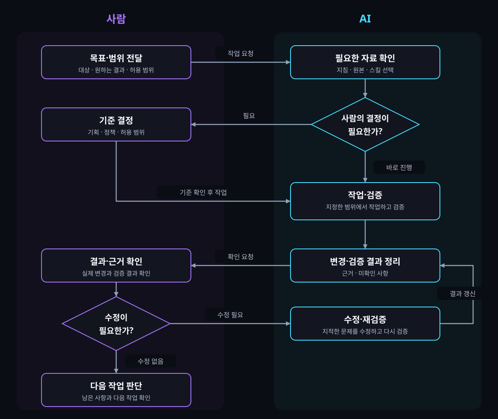

LOUNGE 3.0 · 00 / 05
프로젝트 공통
AI 작업 기준
파트와 AI 도구가 달라도, 필요한 자료를 확인하고 작업·검증·결과를 정리하는 기준을 함께 사용합니다.
LOUNGE 3.0 · 01 / 05
공통 기준과
파트별 관리
함께 사용하는 구조와 형식은 맞추고, 업무에 필요한 내용은 각 파트가 관리합니다.
LOUNGE 3.0 · 02 / 05
공통 폴더와
파트별 문서 구조
공통 기준과 작성 도구를 함께 사용하고, 각 파트의 문서는 같은 역할로 나눕니다.
lounge3.0_guide/
├─ AGENTS.md # 공통 기준·파트 선택
├─ index.html # 전체 시작 페이지
├─ presentation.html # 공통 기준 브리핑
├─ project/ # 프로젝트 공통 기준
├─ collaboration/ # 업무 흐름·코멘트 양식
├─ skills/ # 목적별 공용 스킬
│ ├─ AGENTS.md # 가이드 작성·개발 구분
│ ├─ guides/ # 가이드·브리핑 작성
│ │ ├─ AGENTS.md # 작성 스킬 선택
│ │ └─ 스킬명/SKILL.md
│ └─ development/ # 실제 프로젝트 개발
│ ├─ AGENTS.md # 개발 스킬 선택
│ └─ 스킬명/SKILL.md
├─ templates/ # 공통 HTML 템플릿
├─ assets/ # 공통 스타일·동작
├─ planning/ # 기획 저장소 안내·구조 예시
├─ design/ # 디자인 저장소 안내·구조 예시
├─ frontend/ # 프론트엔드 저장소 안내·구조 예시
└─ backend/ # 백엔드각 파트의 별도 저장소/
├─ AGENTS.md # 파트 기준·문서 선택
├─ README.md # 파트 안내
└─ docs/
├─ AGENTS.md # 문서 작성·수정 규칙
├─ README.md # 문서 구조 안내
├─ index.html # 사람용 시작 페이지
├─ guides/ # 상세 기준
├─ ai/ # AI용 핵심 요약
└─ workflow/
├─ AGENTS.md # 요청별 문서·스킬 선택
├─ index.md # 업무 안내 원본
├─ index.html # 사람용 업무 안내
└─ skills/
├─ AGENTS.md # 파트별 업무 스킬 선택
└─ 스킬명/
└─ SKILL.md # 선택한 스킬의 작업 방법계층을 읽는 방법
루트의 공통 기준 → 해당 파트의 지침 → 요청별 문서·스킬 선택 → 필요한 원본 확인. 각 단계에서는 현재 작업에 필요한 내용만 읽고, 작업 대상에 적용되는 지침은 함께 확인합니다.
LOUNGE 3.0 · 03 / 05
요청에 필요한
문서만 확인
AGENTS.md는 요청에 맞는 문서를 선택하는 안내입니다. 연결된 문서를 매번 전부 읽는 목록이 아닙니다.
LOUNGE 3.0 · 04 / 05
요청부터
결과 확인까지
공통 작업 기준을 확인하고, 각 PL이 구성한 파트 워크플로우와 스킬을 적용합니다. 결과는 다음 작업에 전달합니다.
사람과 AI의 협업 흐름

파트 PL이 구성하는 워크플로우
LOUNGE 3.0 · 05 / 05
기획서·업무 기록과
함께 사용
공통 가이드는 AI의 작업 방법을 안내합니다. 기획 내용과 이슈 상세는 각 원본에서 관리합니다.